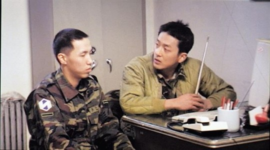
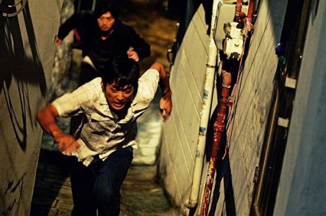
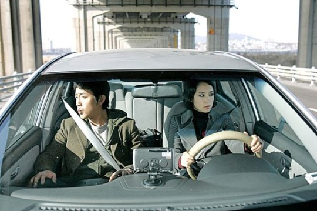
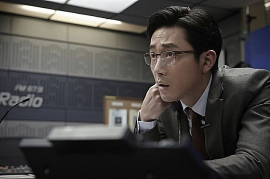

기사입력2016.08.21. 오후 12:41
올해 하정우(38)만큼 바쁜 배우가 또 있을까. 영화 ‘아가씨’가 칸국제영화제 경쟁부문에 진출하면서 프랑스로 날아갔다가, 6월 ‘아가씨’가 개봉하자 홍보활동에 전념했다. 8월 ‘터널’ 개봉까지 이어지면서 ‘아가씨’ 때와 마찬가지로 전국을 돌며 영화관 무대인사까지 다닌다. 이 와중에 내년 개봉하는 영화 ‘신과 함께’의 촬영도 한창이다.
바쁜 만큼 성과도 있었다. 청소년관람불가인 ‘아가씨’는 400만 관객을 넘었고, ‘터널’은 여름 대작이라는 기대 속에 400만(20일 기준) 관객을 돌파했다.
그러면서 하정우는 칸과 국내를 오가며 인터뷰만 3차례 진행했다. 그와의 만남이 잦을수록 그간 지나왔던 영화들에 대해 이야기할 기회도 많았다. “매 작품이 내 인생연기”라고 말한 하정우. 그 중에서 그가 자주 언급했던 영화들을 토대로 그의 인생연기를 짚어봤다.

영화 ‘용서받지 못한 자’에서 말년 병장 태정을 연기한 하정우(오른쪽)와 연출과 더불어 신참 지훈 역을 맡아 열연한 윤종빈 감독. 한국일보 자료사진
용서받지 못한 자(2005)
“촬영하면서 ‘이거 뭔가 나올 거 같다’고 했어요. 이상하게 단 한번도 실패할 거란 생각을 안 했어요.”
하정우의 첫 주연 영화 ‘용서받지 못한 자’는 그의 중앙대 1년 후배인 윤종빈 감독의 졸업작품이었다. 하정우가 이 영화를 만났을 때는 학교를 졸업하고 방송사 탤런트 공채 시험에서도 낙방한 후였다. “백수였던 시기”다.
어느 날 하정우는 인터넷커뮤니티 서비스 싸이월드를 통해 쪽지 하나를 받았다. 윤 감독이 연극 ‘오델로’ ‘우리 집 식구는 아무도 못 말려’ 등으로 무대에 올랐던 하정우를 보고 직접 연락을 해왔던 것이다. 그렇게 인연을 맺은 두 사람은 1년여 간 ‘용서받지 못한 자’를 찍었다.
하정우는 “윤 감독과 학교 강의실에서 많은 대화를 나누며 시나리오를 고치고 또 고쳤다”며 “윤 감독과 지지고 볶고 찍으면서 ‘영화는 이런 것이구나’하는 것도 배웠다”고 회상했다.
하정우는 군기반장으로 모범적(?)인 군생활을 한 말년 병장 태정으로 변신했다. 특유의 능청스러운 말투나 표정뿐만 아니라 세밀한 내면 연기까지 해내 평단의 주목을 받았다. 가장 인상적인 대목은 하정우와 윤 감독의 연기호흡. “손바닥 내”하며 손바닥을 때려가며 신참 지훈(윤종빈)을 교육하는 태정(하정우)의 ‘살아있는’ 연기가 눈에 띈다.
영화는 2005년 부산국제영화제에서 국제영화평론가협회상 등 3관왕에 올랐다. 당시 부산국제영화제를 찾은 티에리 프리모 칸국제영화제 집행위원장이 주목할 만한 시선 부문에 초청도 했다. 하정우 인생 처음 칸의 땅을 밟게 됐다.
“이 영화가 부산영화제에 소개되면서 김기덕 나홍진 감독님과 인연이 됐죠. 그래서 영화 ‘시간’과 ‘추격자’에 출연할 수 있었고요. 또 당시 영화사 청어람의 최용배(현 부천국제판타스틱영화제 집행위원장) 대표의 지원으로 개봉까지 하게 됐죠.”

영화 ‘추격자’에 출연한 하정우와 김윤석. 한국일보 자료사진
추격자(2008)
“‘용서받지 못한 자’를 통해 나홍진 감독님을 만났죠. 또 그와 함께 칸국제영화제도 같으니 신기할 따름이에요.”
하정우가 ‘추격자’를 처음 만난 건 매니저들에 의해서였다. 시나리오를 들고 온 “매니저 형들”은 하정우에게 “꼭 해보라”고 권했다. ‘대체 어떤 작품이길래?’하는 생각도 잠시, 그는 쉴 새 없이 시나리오를 읽어 내려갔고 연쇄살인범 지영민에게 빠져들었다.
하정우는 당시 신인 감독으로 장편영화 데뷔작을 연출하는 나 감독의 카리스마를 잊지 못한다고. 나 감독은 구불구불 골목길을 오르내리며 숨 막히는 추격 장면을 촬영할 때 완벽한 컷을 위해 하루를 꼬박 새는 건 기본이고, 숨소리 하나도 놓치지 않기 위해 배우의 표정이나 눈빛을 카메라에 잡는 데 심혈을 기울였다.
“실은 골목길에서 벽을 타고 넘나드는 장면을 찍을 때는 힘들었어요. 고소공포증이 있어서 높은 곳에서 뛰어내리는 걸 못하거든요. 하지만 제 평생 달릴 수 있는 장면은 ‘추격자’에서 다 찍은 것 같아요.”
‘추격자’는 야간 촬영이 영화의 90%를 차지해 배우들은 낮과 밤이 바뀌는 생활을 해야 했다. 영화 촬영 기간 6개월 동안 골목이란 골목은 다 돌아다니며 촬영을 이어간 ‘추격자’는 청소년관람불가에도 불구하고 500만 명 넘는 관객을 동원해 화제를 모았다. 신예 감독과 배우의 호흡에 박수가 쏟아졌다.
하정우는 “나 감독님과 함께 뜨거운 열정을 불태웠던 작품”이라며 “(사람들의 시선 때문에)모자를 쓰고 밤에 돌아다니지 못할 정도로 화제작이었던 걸 몸소 실감”했다고도 했다. ‘추격자’가 개봉한 뒤 좋아하는 산책도 할 수 없었다는 것.

하정우는 영화 ‘멋진 하루’에서 지질하지만 미워할 수 없는 남자 병운을 연기했다. 한국일보 자료사진
멋진 하루(2008)
“박찬욱 감독님이 저를 캐스팅한 이유가 바로 ‘멋진 하루’의 조병운 연기 때문인 것 같아요. 사기꾼이지만 미워할 수 없는 그런 남자 말이죠.”
하정우의 능청 연기가 극에 달한 영화가 아닐까 싶다. 한 마디로 ‘찌질남’이다. 그것도 여자관계가 복잡한.
병운(하정우)은 헤어진 여자 희수(전도연)가 빌린 돈 350만원을 갚으라고 찾아왔을 때도 화려한 여자관계를 내세우며 급전을 구하려 다닌다. 다른 이도 아닌 희수의 차로 이동하면서 말이다. 1년 전에는 연인 사이였던 두 사람은 채권자와 채무자의 관계로 변해 서울 곳곳을 돌아다니며 예기치 못한 ‘멋진 하루’를 만들어낸다.
병운은 밉지 않은 남자다. 지질하지만 사랑스럽기까지 하다. 여자들의 마음을 들었다 놨다 하며 모성본능을 자극한다. 그는 혼자 아이를 키우는 이혼녀, 돈 많은 사업가, 성매매 여성 등 한 번이라도 옷깃을 스쳤던 여자들을 찾아가 돈을 잘도 꾼다. 미안해하지도 않는다.
하지만 순수한 면을 지닌 남자라는 점도 알 수 있다. 희수와 지하철을 타고 이동하던 병운은 격투기 선수 표도르의 광고 사진을 보고는 꿈 이야기를 한다. 표도르가 꿈에 나와 힘들지 않느냐고 했고, 당신이 있어서 괜찮다고 했다고. 그 말을 들은 희수가 눈물을 보이며 웃는 장면에 여자 관객이라면 공감하지 않을 수 없다. 지질, 미움, 순수, 나약, 허세 등 남자의 속내가 고스란히 드러나기 때문이다.
유머와 진지함 사이에서 줄타기를 잘하는 ‘하정우표’ 연기가 빛을 발하기 시작한 영화가 아닐까. 하정우는 박찬욱 감독과 호흡을 맞춘 ‘아가씨’의 대본을 읽고는 “백작에 제시된 지문과 대사가 낯설지 않았다”며 병운 캐릭터를 떠올렸고.

하정우의 다양한 심리변화가 돋보이는 영화 ‘더 테러 라이브’. 한국일보 자료사진
더 테러 라이브(2013)
“혼자 ‘터널’을 촬영하면서 능숙하게 연기할 수 있었던 건 ‘더 테러 라이브’를 먼저 했기 때문이죠. 만약 그렇지 않았다면 헤맸을 겁니다.”
하정우의 ‘1인극’으로 불리는 ‘터널’의 연기를 언급하려면 ‘더 테러 라이브’를 먼저 봐야 한다. 휴대폰으로 구구절절 전화통화를 하고, 홀로 고립된 라디오 부스에서 변화하는 심리상태를 적나라하게 드러내야 했다. 또 폭파로 인해 무너져 내리는 건물 안에서 살아남기 위해 고군분투 하는 액션 연기까지 해냈다. 이런 경험이 하정우가 ‘터널’의 출연을 결심하게도 했다.
하정우가 연기한 방송사 앵커 윤영화(하정우)는 극과 극을 오가는 심리변화를 묘사하며 테러범과 두뇌싸움을 펼치는 긴박한 상황을 그린다. 불미스러운 일로 라디오 프로그램 진행자로 밀려난 영화는 신원미상의 전화 한 통을 받고 역전의 기회를 모색한다. 한강 다리를 폭파하겠다는 테러리스트와의 통화 내용을 독점 생중계하게 된 것이다.
하정우의 탁월한 연기가 영화를 살린다. 탐욕스런 앵커였다가 실제로 한강 다리가 폭파되자 당혹감을 감추지 못하고, 테러범을 회유하기 위해 온갖 감언이설로 설득하는 장면 등에서 인간의 다양한 심리를 파노라마처럼 스크린에 펼쳐 보인다.
하정우는 “영화의 70% 이상을 혼자 감당해야 했을 정도로 힘든 작업이었다”고 돌아본다. 하지만 ‘더 테러 라이브’와 ‘터널’로 증명된 ‘원맨쇼’연기는 그만의 전매특허가 된 듯하다.